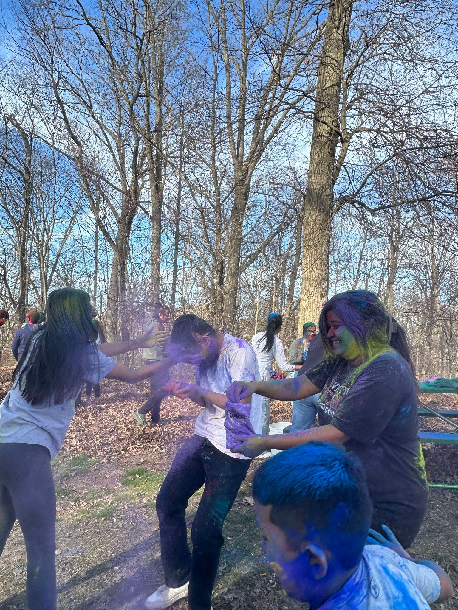
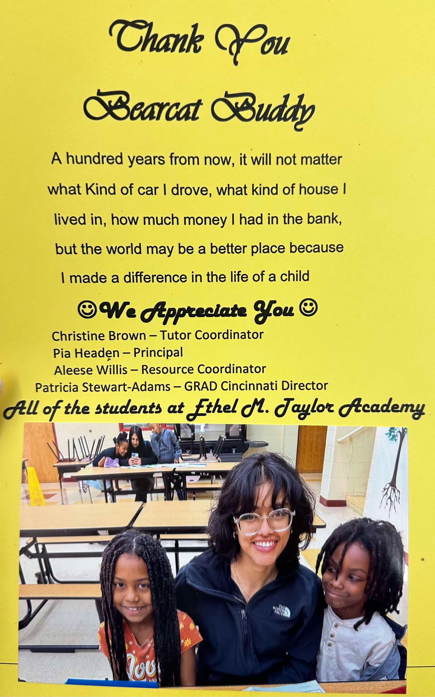

Served as the student presence on campus for UC International, actively participating in collaborative efforts to
enhance the overall student experience.
Encouraged a welcoming environment for students to connect and build friendships across diverse backgrounds.
Facilitated cross-cultural communication by engaging with students from diverse backgrounds and cultures.
Actively participated in various events, workshops, and meet-ups hosted by UC International to foster a sense of
community among international students.
University Funding Board
Executive Board Member | September 2024 - Present
Reviewed and assessed funding requests from Registered Student Organizations (RSOs) to ensure alignment with university
policies and financial guidelines.
Designed a Power BI report to track and visualize incoming funding requests, providing insights into allocation trends
and streamlining decision-making.
Contributed insights and recommendations during group decision-making processes to approve or deny funding requests
based on their potential impact on the student body.
Actively participated in initiatives aimed at promoting campus involvement and enhancing student life through
well-supported events and programs.
Nepalese Student Association
Secretary | August 2024 - Present
Scheduled regular meetings, prepared agendas, and documented minutes to maintain transparency and keep members informed
of key decisions and action items.
Supported the Treasurer in tracking expenses and managing budgets for events, ensuring financial accountability and
sustainability for the organization.
Played a pivotal role in planning and executing cultural and social events, such as festivals and community service
activities, to promote Nepalese culture and foster community engagement.
Assisted in recruiting new members, maintaining an updated membership database, and ensuring members are aware of
upcoming events and opportunities.


Bearcat Buddies
Tutor | Aug 2023 - Present
Tutored second-grade students in reading as a part of Bearcat Buddies at the University of Cincinnati.
Helped them gain new knowledge in the kindest and simplest way possible.
Focused on providing encouragement and support to foster a positive learning environment.
Adapted communication styles to meet the unique needs of each student, recognizing the importance of patience.